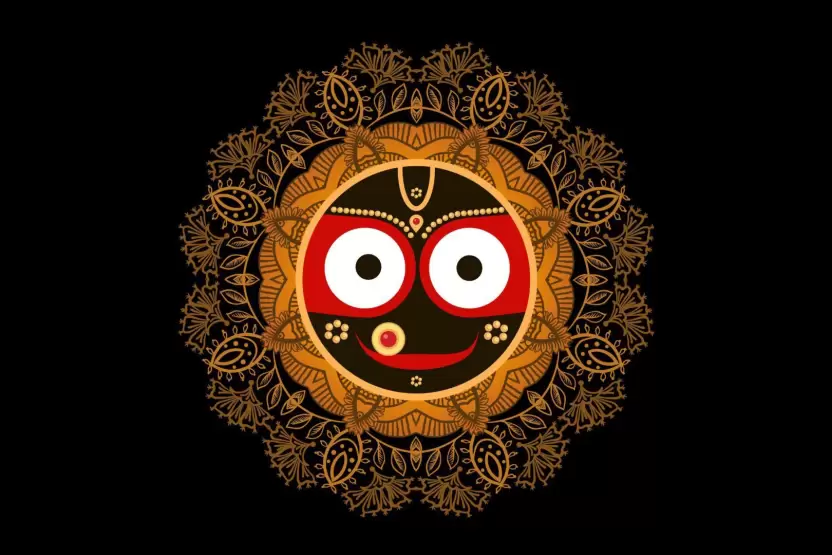
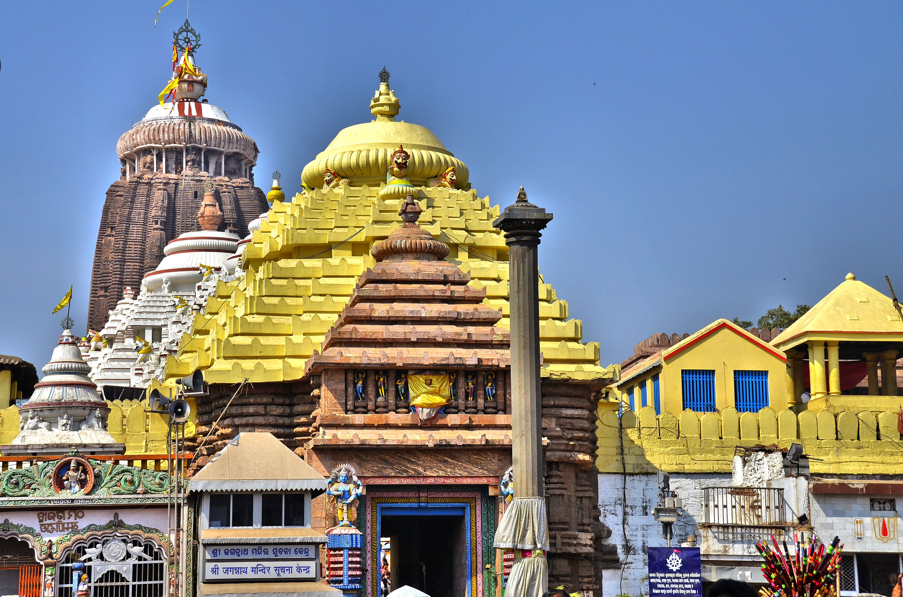

Jagganath Temple
The history of the Jagannath Puri Temple is an intriguing narrative. A monarch called Viswavasu secretly worshipped Lord Jagannath as Lord Neela Madhaba in a wilderness. King Indradyumna wanted to learn more about the god, so he dispatched Vidyapati, a Brahmin priest, to Viswavasu. Vidyapati's efforts to locate the location were futile. But he fell in love with and married Viswavasu's daughter, Lalita. Then, at Vidyapati's request, Viswavasu blindfolded his son-in-law and led him to the cave where he worshipped Lord Jagannath.


Architecture
The worldwide known Odisha temple is spread across 400,000 square feet, with a 20-foot-high wall and a 192-foot-tall tower. It stands on an elevated stone platform that spans 10 acres. The four massive rooms, Bhogmandapa (offerings hall), Nata-mandir (dancing and music hall), Jagamohana, and Deul, tell volumes about the amazing architecture of the time. Aside from that, Jagannath temple has four major gateways in all four directions. Interestingly, each of these four gates has a distinct name, such as Lions Gate, Tiger Gate, Horse Gate, and Elephant Gate. The main gate, located on Grand Road, is the Lion Gate. There are several shrines inside the temple complex. There is also a wheel on top of the temple known as the Nila Chakra or Blue Wheel. It is composed of various metals, and a new flag is hoisted on the chakra every day.